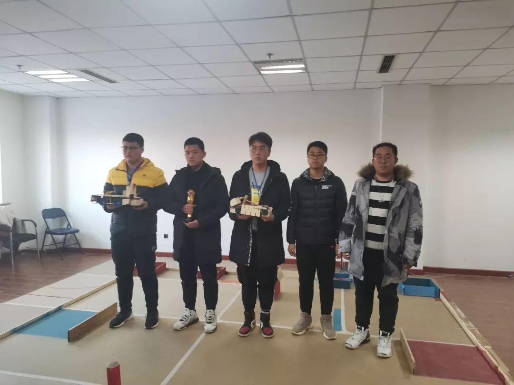
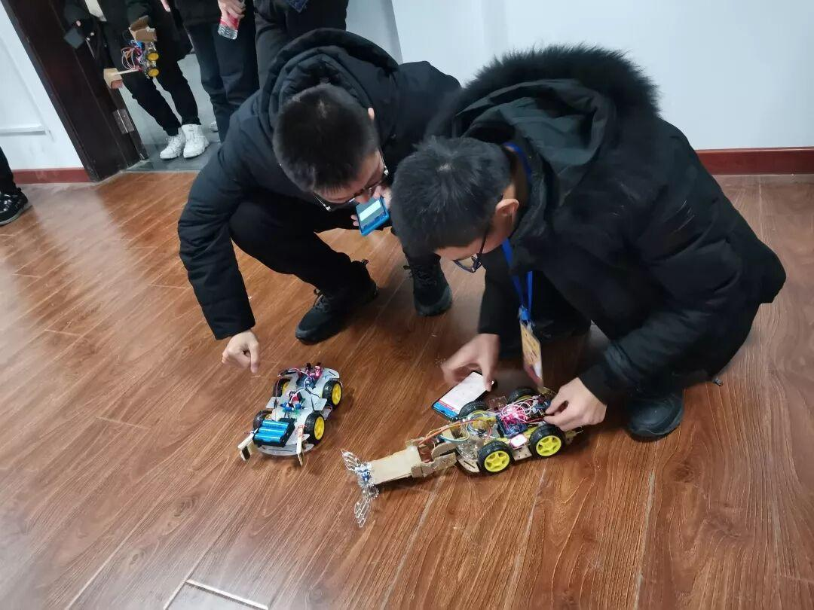
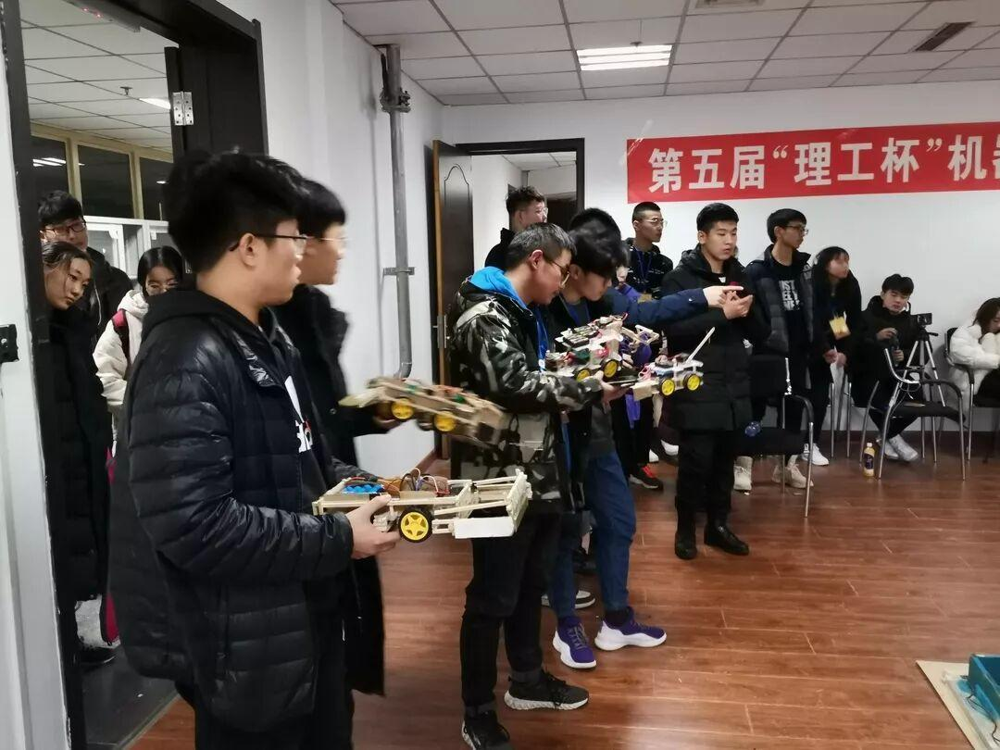
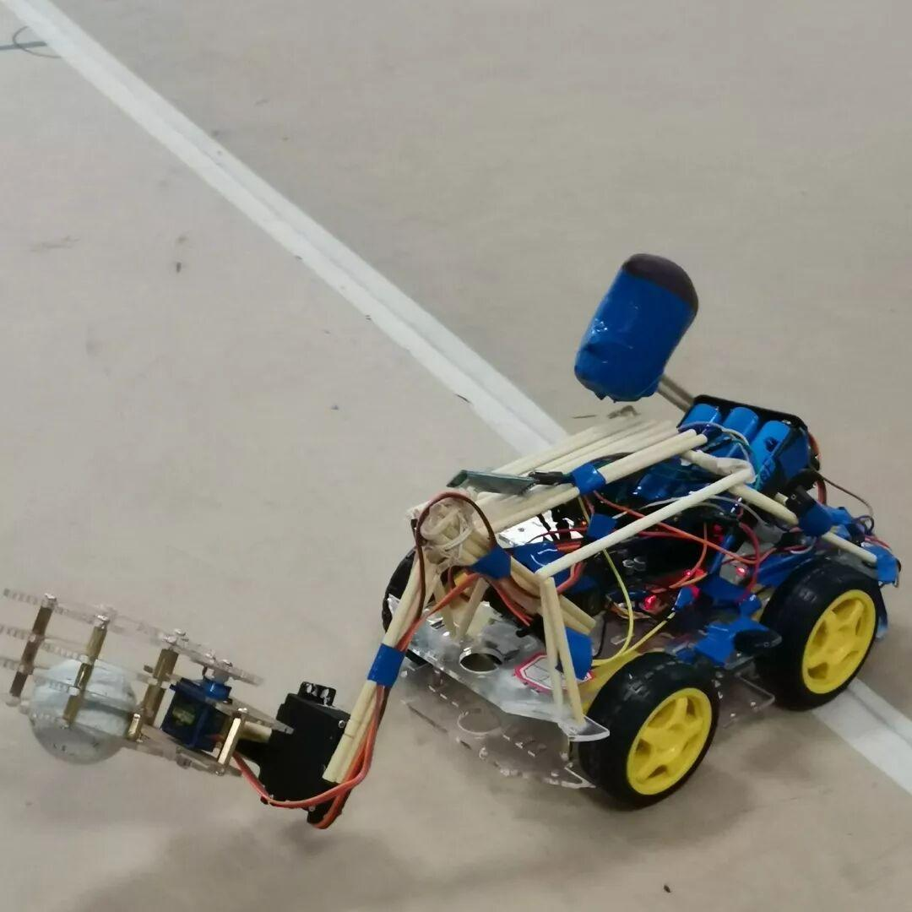
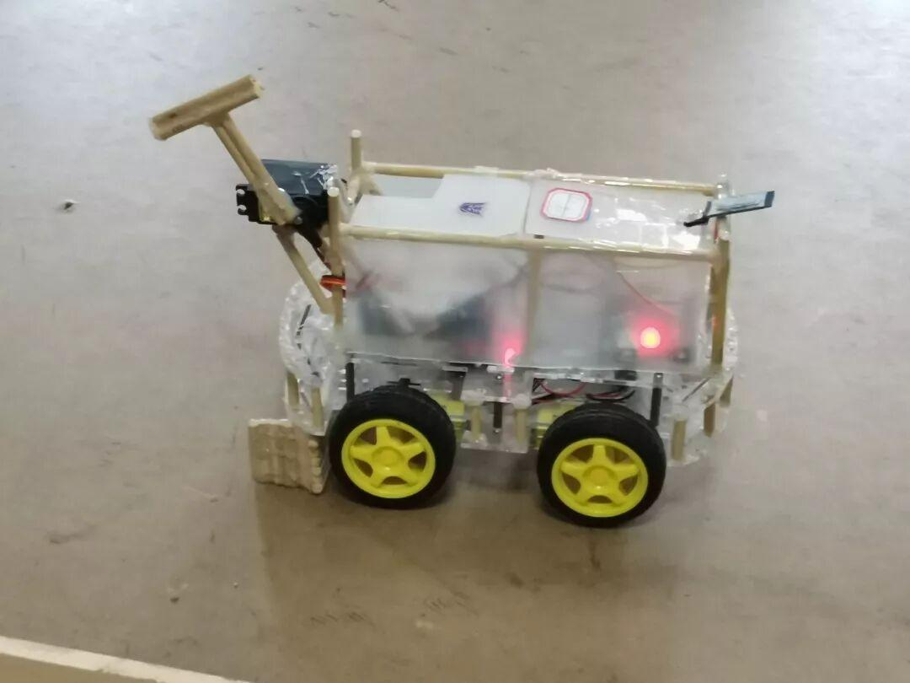
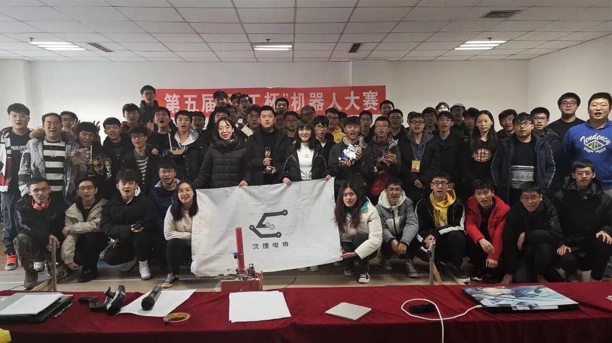
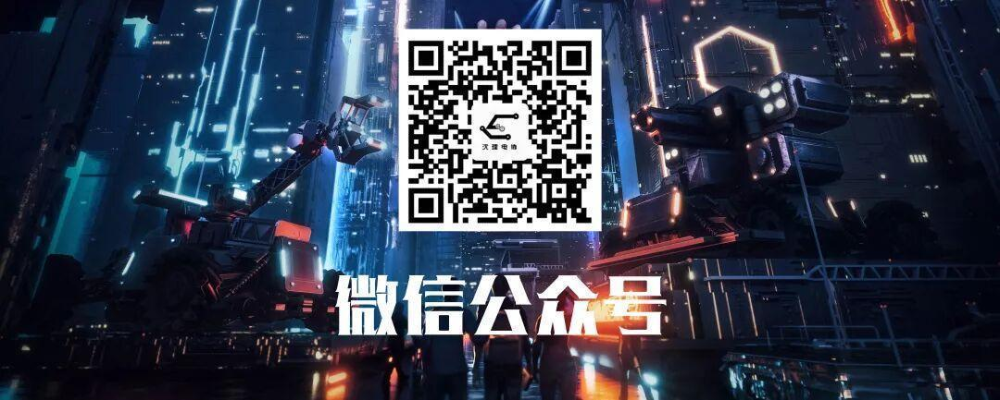

第五届理工杯机器人大赛圆满落幕！
2019年第五届理工杯机器人大赛终于落幕了!首先恭喜CAB队获得了冠军，风生水起队获得亚军，One For All队获得季军! 他们凭着自己精巧的设计以及出色的战略，能在众多队伍中脱颖而出，于诸多强者中杀出一条血路来，并一步一步登上理工杯的顶峰，实属不易。让我们再一次用自己的敬佩之心祝贺他们。




回顾我们这个赛季从开始到结束，我们大一的新生或对机器人有着天生的热爱，或因为机械与编程，想要通过机器人来一展身手，又或者是因为好奇而被拉入坑，而大二大三的学长或因为上个赛季的不服气，或因为来指导大一小萌新，也都纷纷加入这场机器人之争，由此启程了我们新一届的造机器人之旅。我们都幻想着，能最大化利用自己的创造力，不断激发自己的潜能，捕捉每一瞬的灵感，为自己的机器人不断添砖加瓦，造出一个独属于自己队伍的绝世无双的机器人，并希望能在最后的赛场中一展自己的风采。

我们凑上一笔钱，买来了组装机器人的各种装备，并认真听讲着电协举办着的每一次教学，恨不得能将所有的知识收入囊中。至此，机器人大赛开始了如火如荼的搭建。在这其中，我们遇到过数不清的问题，比如为了一个小错误，可能要把好不容易搭建出来的小车一点一点拆解，一部分一部分分析哪里出了问题，时不时又烧毁几个舵机，又有时控制着控制着，机器人突然失控，开始中风似的疯狂鬼畜，更有甚者，连机器人的主板都会烧没了，这里面有多少心酸，也只有造机器人的队伍们自己才知道，然而功夫是不负有心人的，上天也只会眷顾那些一直坚持到底不放弃的人。只要能扛到最后，我们总能找到办法去解决这些问题，并最终造出令我们心满意足的完美机器人。





然而到了这个时候，我们依然不能松懈，因为最后的决战，才是检验真正实力的时候。我们需要为这场战斗制定完美的战略，研读规则，查找规则的每个细节，以期望能一招制敌。这不但是一场机器人与机器人的较量，更是一场心灵的博弈，就在这片赛场中央，我们智慧的结晶将于此绽放，碰撞出一片又一片激烈的火花。
然而比赛总会有赢有输，有人走向胜利，也有人成为他人的垫脚石。但不管结果如何，在这一路走来，我们学到了许许多多的知识，也结识了一群又一群新的朋友，我们只能说，此旅无憾！
<< 滑动查看下一张图片 >>


最后本次理工杯大赛能顺利进行，离不开每一位工作人员的努力!在这里我们要感谢又高又帅声音又好听的解说小哥哥、感谢公平公正尽职尽责的裁判小哥哥、感谢耐心认真计分、录像的小哥哥小姐姐们！还有感谢大家的积极参与与支持!
樱花于它飘落在空中柔美起舞的转瞬之际，也要落归于尘土。盛大的理工杯赛事，在激烈的对决之后，也终要结束，让我们期待着下一次的理工杯再相遇吧！


文字：王 杰
图片：信息部
排版：辛学敏
想了解更多资讯，请关注我们~
